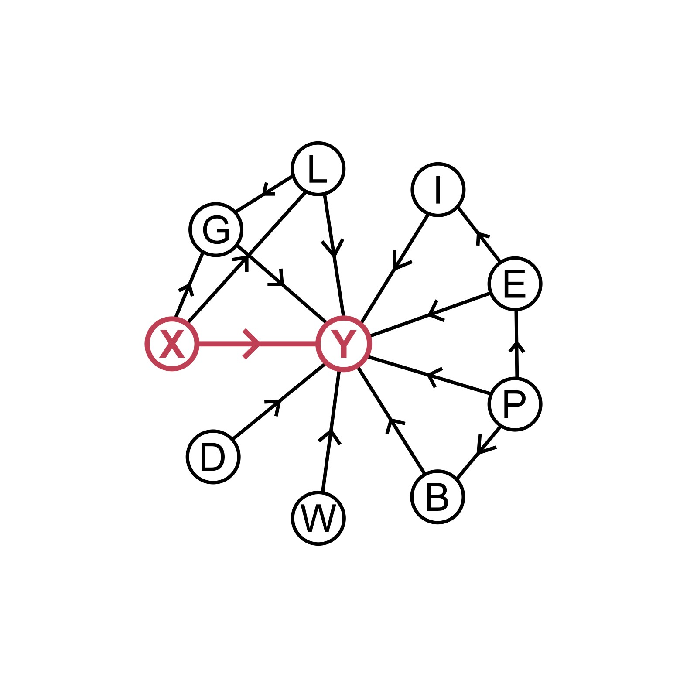
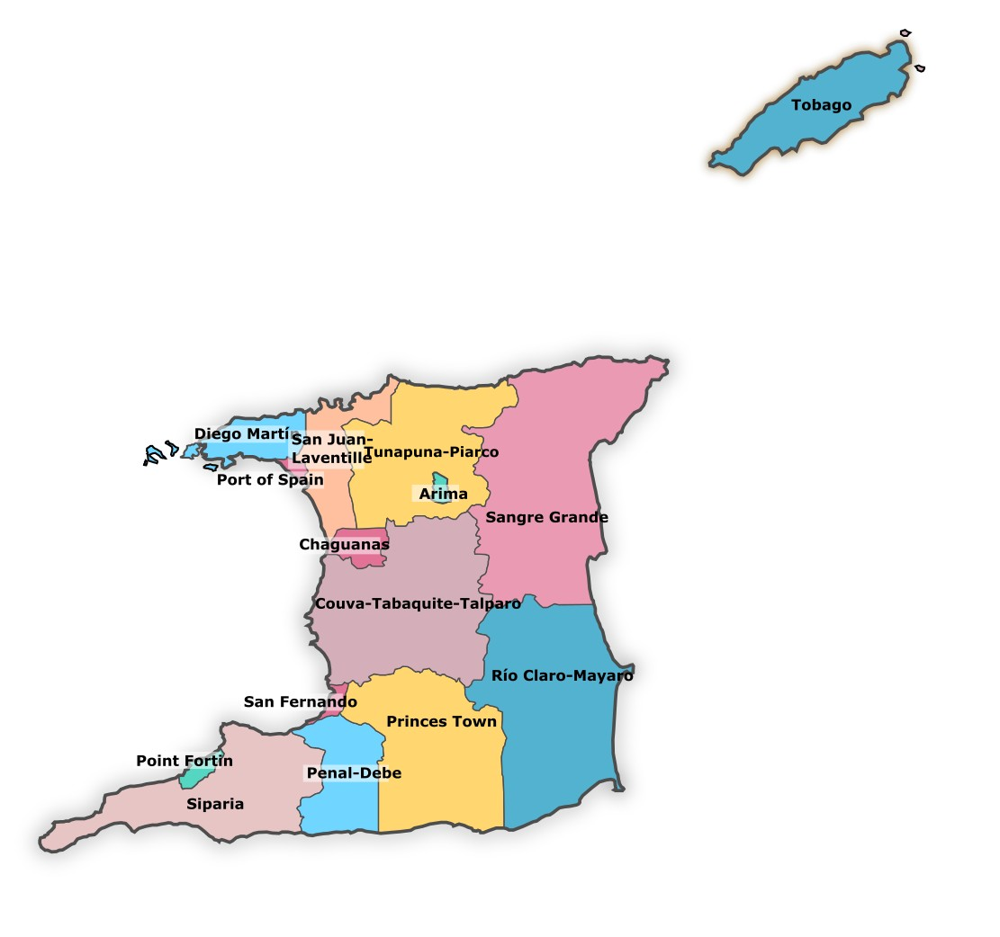
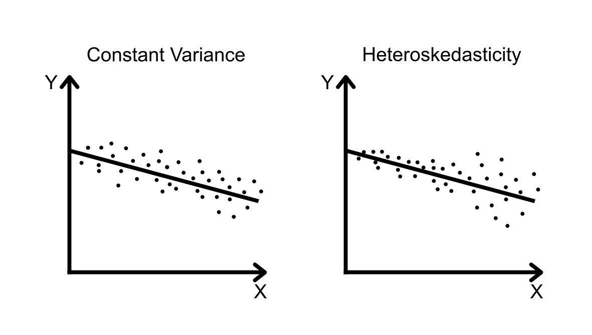

Introduction
Rigorous statistical analysis is necessary to understand how repeated states of emergency (SOEs) affect the rate of violent crime in Trinidad and Tobago (TnT). Conducting this statistical analysis requires two steps: further development of the Network Disruption Theory, and development of a statistical model.
The Network Disruption Theory and Causal Model

As outlined in part 1 of this series, during an SOE, the government of TnT has the special power to detain a criminal using a preventative detention order (PDO). The government uses PDOs to disrupt criminal networks, decreasing their ability to commit violent crime. If this theory were true, then the execution of a preventative detention order in a community (the independent variable, \(X\)) should cause a reduction in violent crime in the surrounding community (the dependent variable, \(Y\)). The effects of detentions are expected to be localised to a community, particularly because most gangs in TnT are small and community-based [4][6]. Additionally, I expect that the effects of a PDO will only be temporary because criminal networks/gangs can adapt to the disruption.
I also expect that the rate of violent crime, \(Y\), will be influenced by a host of other factors such as:
- Beliefs, \(B\)
- Disruptions (pandemics, holidays, etc), \(D\)
- Economic Indicators, \(E\)
- Gang Prevalence / Strength, \(G\)
- Infrastructure, \(I\)
- Perceived Legal Consequences, \(L\)
- Population Demographics, \(P\)
- Weather, \(W\)
The graph, representing my causal model, shows how I expect these factors to be related. In the graph \(X → Y\) means that \(X\) (the government executing a PDO in a community) somehow directly affects \(Y\) (the rate of violent crime in that community). Though my goal is to determine how \(X\) affects \(Y\), as shown in the graph, I expect there to be many interesting relationships between the factors. This will complicate the analysis.
Statistical Model
A naive approach to analysing the causal model would be to construct a dataset that lists national aggregates of each aforementioned variable. Each row of the dataset would outline the number of violent crimes committed throughout TnT that week, \(Y\), the number of PDOs executed, \(X\), and all the other relevant factors for that week. Using the ordinary least squares method (OLS), \(Y\) would be regressed against \(X\), with all the other variables treated as controls. Here \(A_t\) indicates the value of variable \(A\) during week \(t\). The regression equation for this statistical model is:
\[\begin{align*} Y_t = &\beta_1 X_t + \beta_2 B_t + \beta_3 D_t + \beta_4 E_t \\ &+ \beta_5 G_t + \beta_6 I_t + \beta_7 L_t + \beta_8 P_t \\ &+ \beta_9 W_t + \epsilon \end{align*}\]
After the regression is complete, we would have identified the effects of X on Y assuming that \(\beta\) is found to be statistically significant.
There are numerous issues with this statistical model, the majority of which stem from the assumptions of the OLS method [3][5]. Below is a discussion of those assumptions, the ways in which they are violated, and my plan to adapt this project's methodology in response.
Assumption 1: The error term has a mean of zero.
Given the current model specification, the error term, \(\epsilon\), can not have a mean of zero because I have not accounted for the baseline violent crime rate throughout the country. In the current setup, \(\epsilon\) subsumes the baseline crime rate. This issue could be solved by including a constant factor, \(c\). A single constant factor, however, would overlook the fact that crime rates vary throughout the country and from week-to-week.
The best solution would be to use two-way fixed effects, \(\alpha_i\) and \(\lambda_t\). \(\alpha_i\) would represent the baseline crime rate in geographic area \(i\) over the period of the study, whereas \(\lambda_t\) would represent the baseline crime rate during week \(t\) across the entire country. These two-way fixed effects thereby allow the statistical model to center its errors around the mean of zero [2].
To accommodate these two way fixed effects, I will have to disaggregate the data to geographic subdivisions that make up the country such as cities or police administrative zones. The regression equation now becomes:
\[\begin{align*} Y_{i,t} = &\beta_1 X_{i,t} + \beta_2 B_{i,t} + \beta_3 D_{i,t} + \beta_4 E_{i,t} \\ &+ \beta_5 G_{i,t} + \beta_6 I_{i,t} + \beta_7 L_{i,t} + \beta_8 P_{i,t} \\ &+ \beta_9 W_{i,t} + \alpha_i + \lambda_t + \epsilon \end{align*}\]
Assumption 2: The regression model is linear.
The regression model is nonlinear because \(Y_{i,t}\) is not a continuous variable nor can it be determined by a linear combination of the current independent variables. Firstly, the rate of violent crime in a given week, \(Y_{i,t}\), is non-negative and discrete. Half a murder cannot happen or be taken away. Secondly, as each row of data now represents geographic subdivisions rather than the entire country, a lot of the \(Y_{i,t}\) variables will equal zero simply because no crime occurred in that region during the time frame under consideration. This will skew the data so that it is non-linear. To account for these first two issues I will use a non-OLS method, and one designed particularly to study discrete data such as \(Y_{i,t}\). The poisson, negative binomial, and pseudo-poisson maximum likelihood (PPML) methods are suitable techniques for discrete data [1][8].
A third issue is that by considering geographic subdivisions rather than the country as a whole, I unknowingly made the assumption that variables in neighbouring regions do not affect the rate of violent crime in the region under consideration. This is wrong. Though I assume criminals in the largely community based gangs of TnT commit crime within their community, they may still cross the geographic borders that I specify to do so. I account for this issue by introducing a new spillover variable, \(S\), that will measure the number of PDOs executed in neighbouring geographic regions.
Lastly, \(Y_{i,t}\) is unlikely to be expressed as a linear combination of its current variables because the effect of a PDO is unlikely to be felt immediately. In reality, this effect may be felt in the following week or even month. I account for this issue by including leads of the variables in the preceding periods. Where \(A\) represents some variable, let \(A'_t\) be a vector of leads of \(A\) up to period \(t\) for some given number of leads \(j\). \(A'_t=(A'_t, A'_{t-1},..., A'_{t-j})\). Similarly \(\beta'\) is a vector of coefficients that correspond to each lead. The new regression equation becomes:
\[\begin{align*} Y_{i,t} = &\beta'_1 X'_{i,t} + \beta'_2 S'_{i,t} + \beta'_3 B'_{i,t} + \beta'_4 D'_{i,t} \\ &+ \beta'_5 E'_{i,t} + \beta'_6 G'_{i,t} + \beta'_7 I'_{i,t} + \beta'_8 L'_{i,t} \\ &+ \beta'_9 P'_{i,t} + \beta'_{10} W'_{i,t} + \alpha_i + \lambda_t + \epsilon \end{align*}\]

Assumption 3: The independent variables are uncorrelated with the error term.
If my causal model were perfect, then this assumption would hold true. However, perfection is impossible and thus there likely exists confounding or mediating variables that I have not considered. The effect of these unknown variables will be subsumed by the error term, resulting in a correlation with the independent variables. Furthermore, data may not exist for all of the variables in my causal model leading to them being omitted from the statistical model. For example, I do not know how I would quantify “perceived legal consequences” week-by-week for each geographic area. Omitted variables, like unknown variables, will cause some correlation between the independent variables and the error term.
Luckily, the two-way fixed effects introduced under assumption 1 will limit the correlation caused by unknown and omitted variables [2]. \(\lambda_t\), by representing the baseline crime rate within week \(t\), will subsume the effects of all variables that may change with time but are constant throughout the country at any given point in time. For example, weather, \(W\), disruptions, \(D\), and some economic indicators such as national gdp, \(E\), vary with respect to time at the national level and thus are subsumed by \(\lambda_t\). \(\alpha_i\), by representing the baseline crime rate within geographic area \(i\), will subsume the effects of all variables that may differ throughout subregions of the country but that are fixed over the course of the study. For example, beliefs, \(B\), population demographics, \(P\), infrastructure, \(I\), and some economic indicators such as poverty rates, \(E\), vary across communities but remain fixed over the the period under investigation, and thus are subsumed by \(\alpha_i\). As a result, the inclusion of \(\lambda_t\) and \(\alpha_i\) in our statistical model, makes variables such as \(B, D, E, I, P,\) and \(W\) unnecessary. \(G\) and \(L\) are also excluded from the statistical model because I do not know how to quantify them. The regression equation now simplifies to:
\[Y_{i,t} = \beta'_1 X'_{i,t} + \beta'_2 S'_{i,t} + \alpha_i + \lambda_t + \epsilon\]
This is great because it retains much of the rigour of our causal model while focussing on our primary variables: \(Y_{i,t}, X_{i,t}\), and \(S_{i,t}\).
Assumption 4: The error terms are uncorrelated with each other.
The error terms are correlated with each other firstly because neighboring regions will have similar crime rates, and secondly because crime may follow trends over time that are unaccounted for.
My solution is to implement Conley spatial HAC standard errors [7]. Using this method, the statistical model can account for correlation across both neighboring space and time by explicitly outlining the spatial-temporal range in which correlations are expected. For example, based on theory I may expect that there are correlations between violent crimes within the span of a month and within 10km from the geographic region, and thus I will specify that in the model.
Assumptions 5: None of the independent variables is a perfect linear combination of the others.
I do not expect this to be an issue because the causal model predicts that each independent variable uniquely and directly affects the rate of violent crime, \(Y_{i,t}\).
Assumptions 6 & 7: The error terms have a constant variance and are normally distributed.
The error terms are not expected to have constant variance or be normally distributed. As discussed under assumption 2, \(Y_{i,t}\) will frequently equal zero, skewing the data away from a normal distribution. Secondly, it is possible that the government will execute more PDOs in areas with more resilient criminal networks, as it is harder for them to identify the key criminal actors. Due to the resilience of these networks, the execution of any individual PDO may have less effect on crime rates, leading to an increase in the variance of outcomes. Thus the error terms may have a non-constant variance with respect to \(X_{i,t}\).
Both of these issues will be addressed by statistically modeling the data using the PPML method as mentioned under assumption 2. Unlike the poisson or negative binomial regression techniques, the PPML method naturally accounts for zero-bias and heteroskedasticity (non-constant variance) [8].

Conclusion
To understand how repeated SOEs affect the rate of violent crime in TnT, I will construct a dataset where each row corresponds to a specific region of the country for a specific week. The variables in each row will be: the number of violent crime committed, \(Y_{i,t}\), the number of PDOs executed with leads for \(j\) weeks, \(X'_{i,t}\), and the number of PDOs executed in neighbouring regions with leads for \(j\) weeks, \(S'_{i,t}\). I will statistically model this dataset using the pseudo-maximum likelihood method and two way fixed effects: geographic region, \(\alpha_i\), and time period or week, \(\lambda_t\). In the following post I will discuss my data sources and collection before outlining my preliminary results.
References
Sources
- "Basic Count Regression." Regression Analysis of Count Data https://www.cambridge.org/core/books/abs/regression-analysis-of-count-data/basic-count-regression/147B25580DC6FC77B3E359F9C9B4E71C
- "Causal Panel Designs." Causal Inference - The Remix https://mixtape.scunning.com/08-panel_data
- 7 Classical Assumptions of Ordinary Least Squares (OLS) Linear Regression. https://statisticsbyjim.com/regression/ols-linear-regression-assumptions/
- Country policy and information note: Gangs, Trinidad and Tobago (Version 1.0). https://www.gov.uk/government/publications/trinidad-and-tobago-country-policy-and-information-notes/country-policy-and-information-note-gangs-trinidad-and-tobago-june-2026-accessible#assessment
- Exploring the 5 OLS Assumptions for Linear Regression Analysis. https://365datascience.com/tutorials/statistics-tutorials/ols-assumptions/
- "Gangs in Trinidad and Tobago." Gangs in the Caribbean: Responses of State and Society. https://www.uwipress.com/9789766405076/gangs-in-the-caribbean/
- Introduction to conleyreg. https://cran.r-project.org/web/packages/conleyreg/vignettes/conleyreg_introduction.html
- "The Log of Gravity." The Review of Economics and Statistics. https://papers.ssrn.com/sol3/papers.cfm?abstract_id=380442
Pictures
- https://upload.wikimedia.org/wikipedia/commons/f/f0/Regional_corporations_and_municipalities_of_Trinidad_and_Tobago.svg
- All diagrams are drawn by me.